Running a league
Create a league, fill it, start it, and close each Stage. Follow Jo from an empty page to Stage 2.
Set up a league
-
Open Manage
When a manager of your club makes you a League manager, Manage joins the menu. It shows the leagues you run, and only those. Press New league.
If you’ve been given one league to run, it’s here too, without New league.
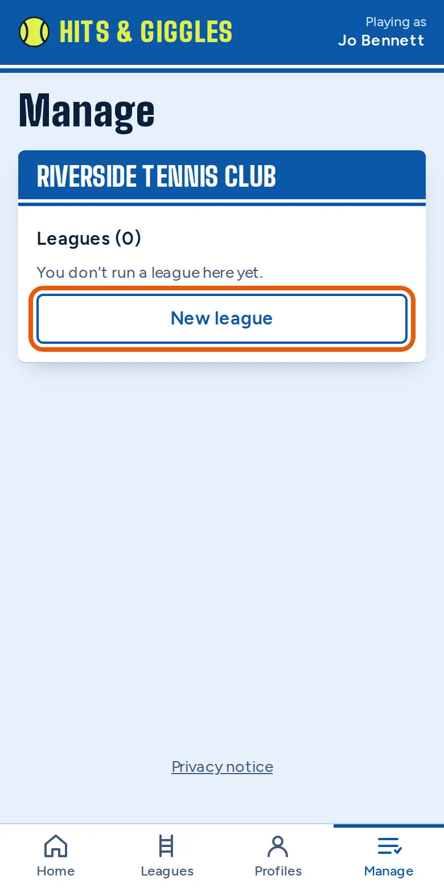
-
Name it, and say when it runs
Choose the type (singles or doubles; men, women or mixed), the first and last day, and how long each Stage lasts. A calendar month is usual.
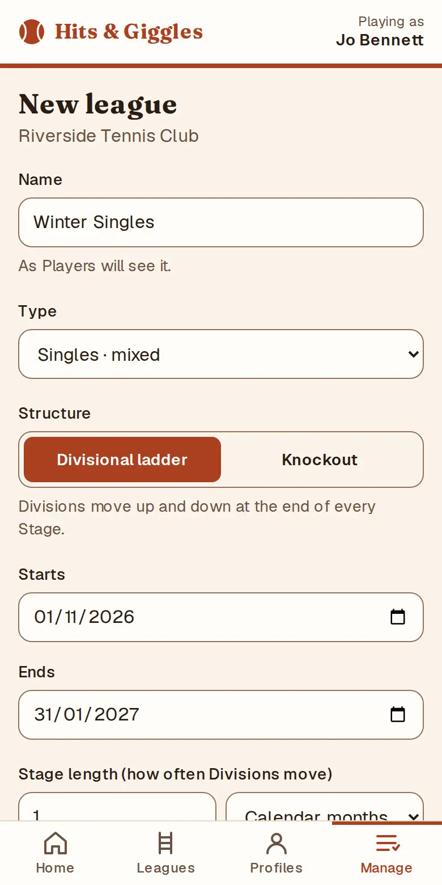
-
Choose the format
- Standings: Standard ranks by wins. Bonus points gives a point for a win, a point for a game played, and one more for playing them all. Either way, ties go by games difference, then the result between them.
- When a Stage ends: you close it, or it closes by itself on its last day once nothing is waiting for you.
- Games per set and Sets: the app checks every score against them.
The type and the format can’t be changed afterwards. The name can.
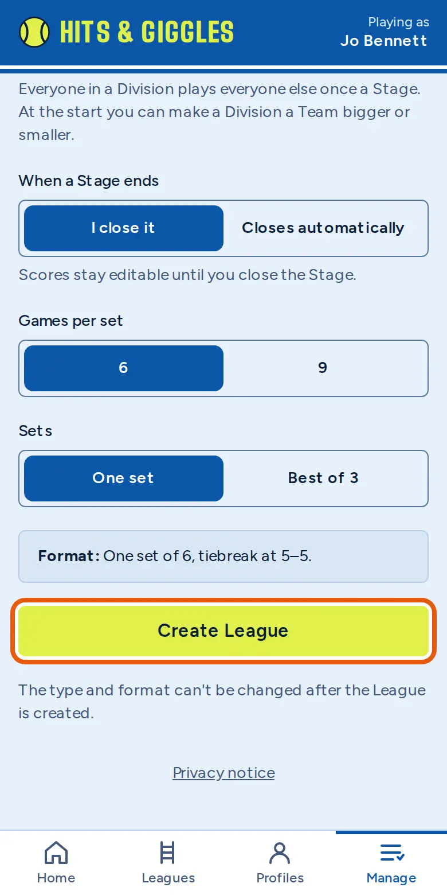
-
This is your league’s page
Everything you do for the league happens here. Members of the club can ask to join from now on.
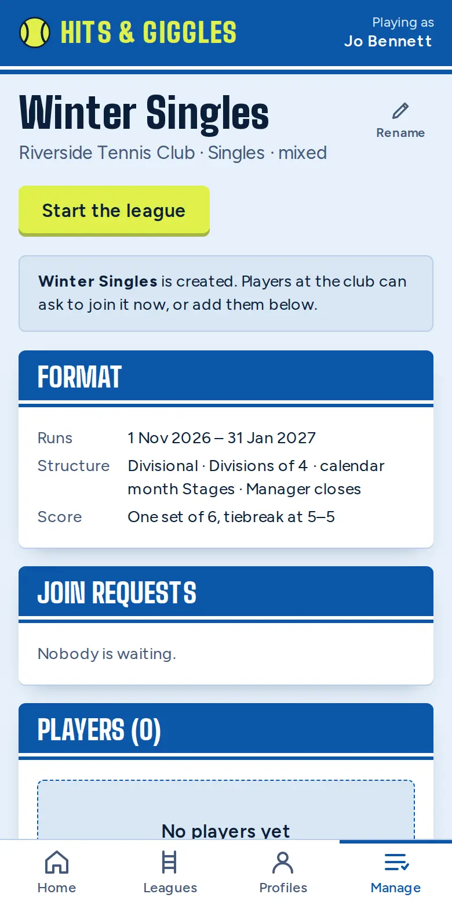
Fill it
-
Add members
Pick anyone in the club and press Add to league. They don’t have to ask, or even to have signed in.
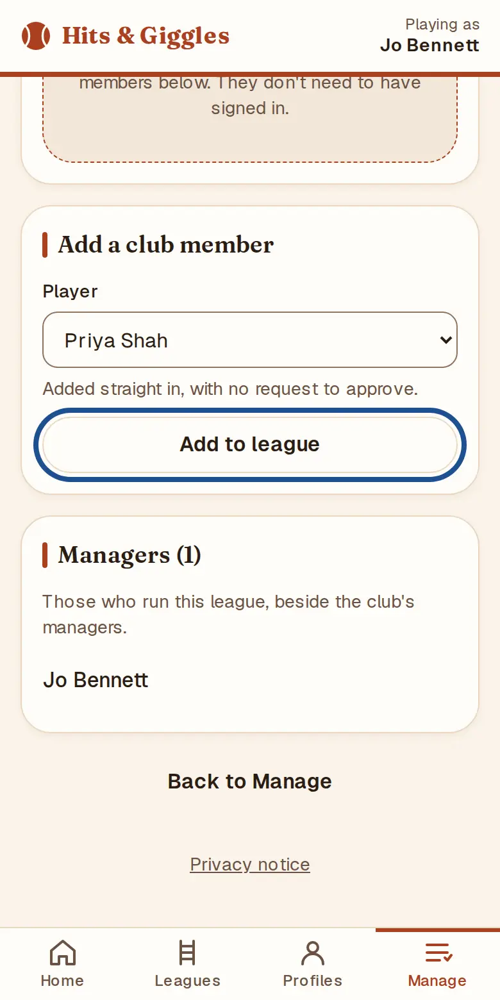
-
Answer requests
Approve or Reject who asks. Someone rejected can’t ask again, but you can still add them.
In a doubles league, this page is also where you pair players into teams.
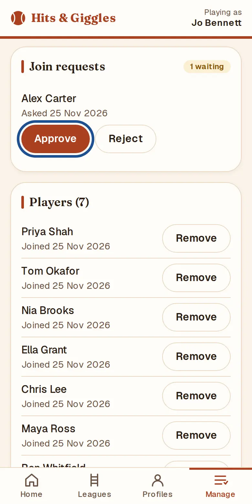
Start it
-
Start the league
When everyone’s in, press Start the league.
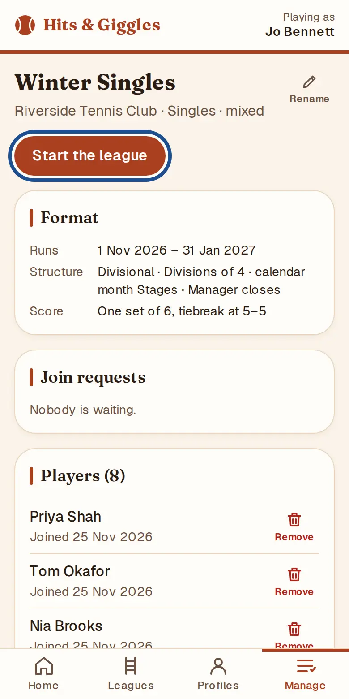
-
Put the ladder in order
The app proposes an order and the Divisions. Move anyone with the arrows, Leave out someone for now, use − and + for fewer or more Divisions, and Move line to change where one ends.
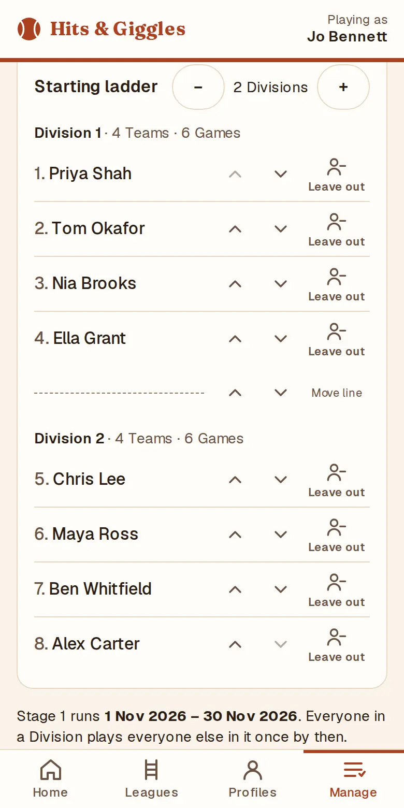
-
Confirm
Confirm and start makes Stage 1’s games: everyone plays everyone in their Division once. From here on, only results move people.
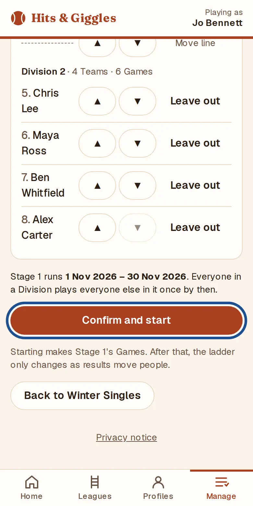
Run a Stage
-
It’s running
Players see their games on Home, and that you run the league, by name. To do before the Stage closes is what’s still missing.
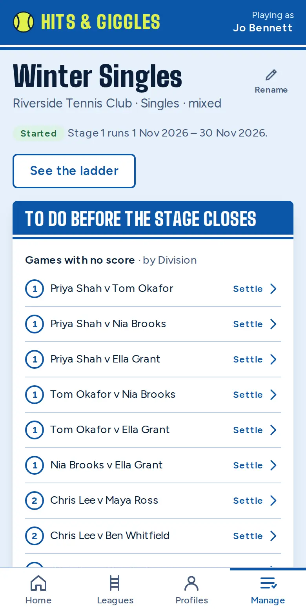
-
Near the end, see what’s left
Players enter their own scores. Whatever they don’t, you settle: press the game, marked Settle.
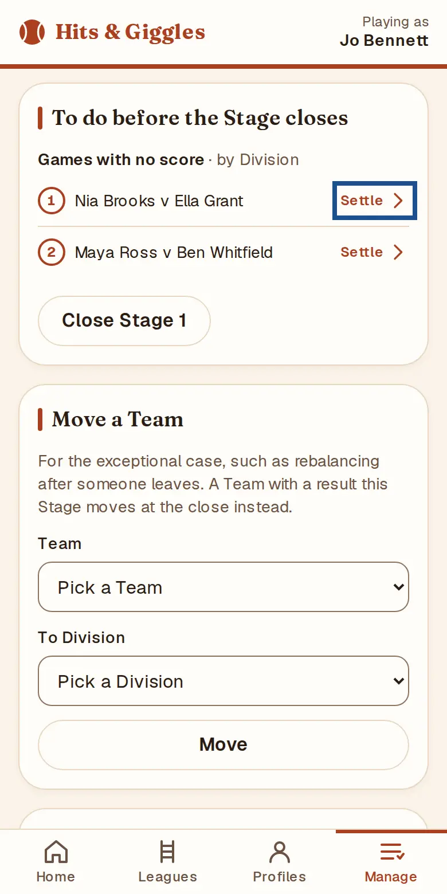
-
Settle a game
Record the score if it was played, or Mark not played if it wasn’t. A game not played counts for neither side.
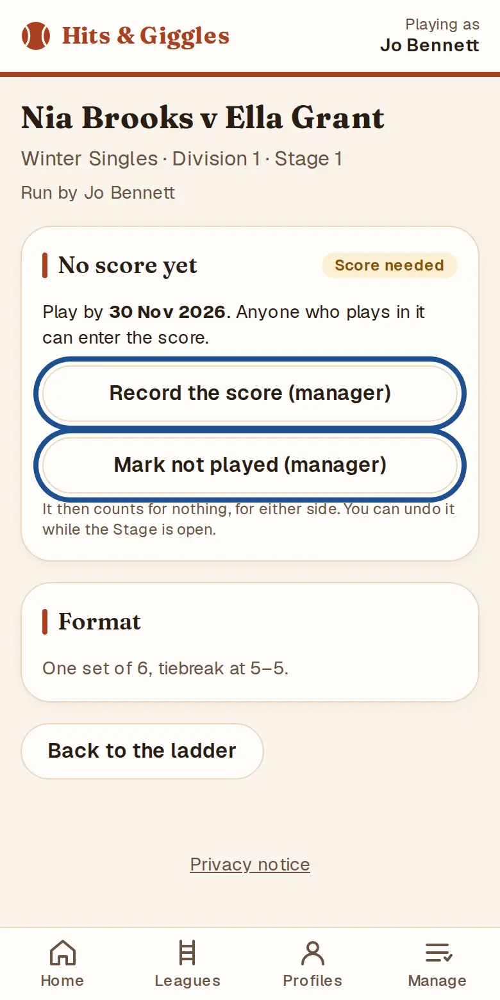
-
Change your mind
Undo a game marked not played, for as long as the Stage is open.
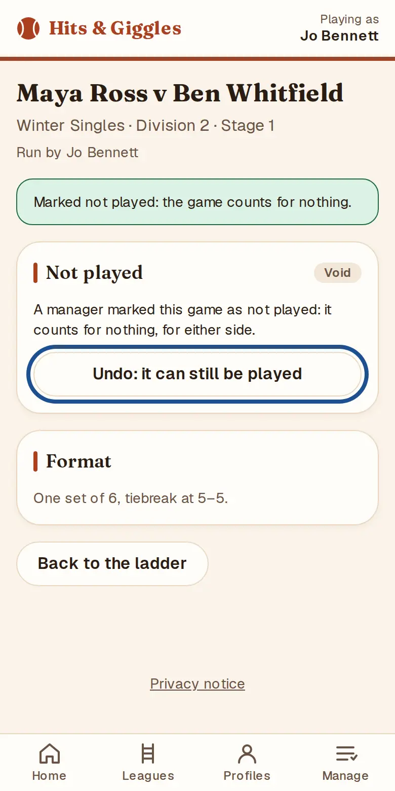
-
Put a wrong score right
Override score changes any score in your league, even after its Stage has closed. It’s kept in the history as yours, with the score it replaced.
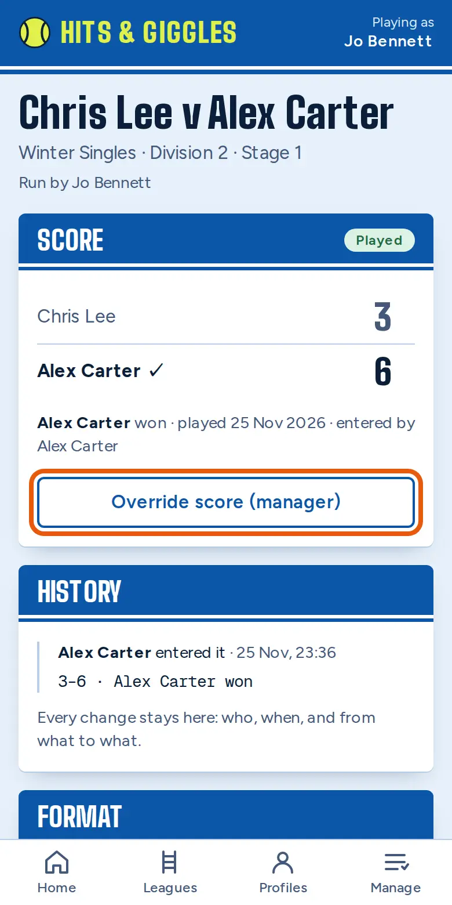
-
Move someone, for once
Move a Team is for the exceptional case, such as when someone leaves a Division short. It works while they have no result this Stage.
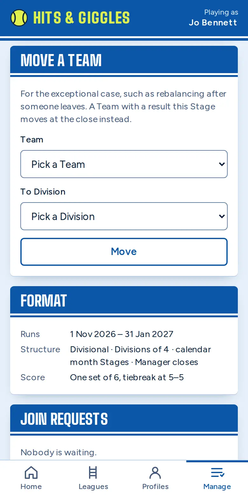
Close a Stage
-
Nothing left to settle?
Press Close Stage. You can close early if everyone has played.
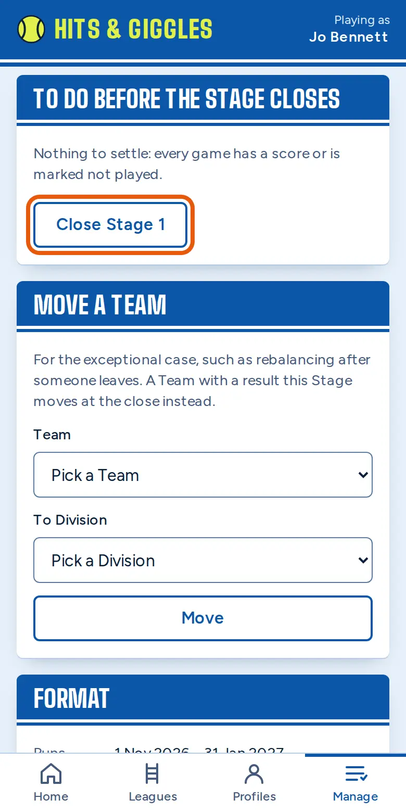
-
Check who moves
First place goes up, last place goes down. If a tie decides it, the app highlights it and you put those players in order.
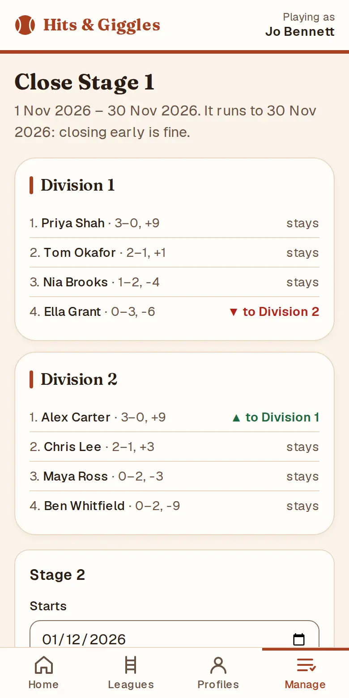
-
Open the next Stage
The dates are filled in; change them if you need to. Anyone waiting for a place can be ticked to start at the bottom of the ladder.
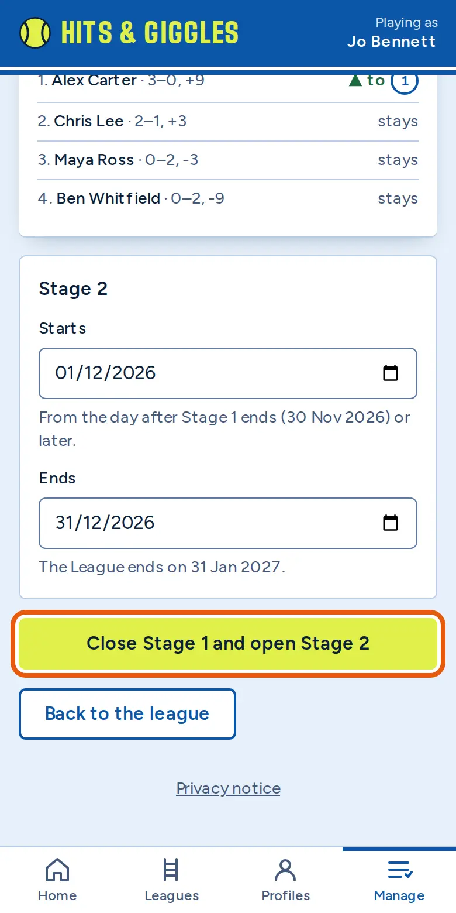
-
And round again
Everyone has new games, and Stage 1’s scores are locked. Closing the last Stage ends the league.
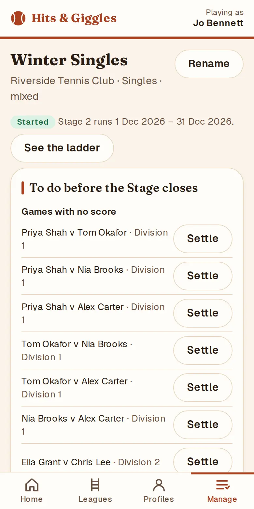
Good to know
- What can’t a League manager do?
- Manage the club’s members or its join link, see leagues you don’t run, or say who else runs yours. Those are the club’s managers’.
- Can I play in my own league?
- Yes. You enter your own scores as any player does.
- Who do I see when I add someone?
- Everyone in the club, by name. Two people can share a name: ask a manager of the club if you can’t tell.
- What about knockouts and Foursomes?
- You can create them, but starting one isn’t built yet.
- Someone joins after the start?
- They’re in the league without a place, until you tick them when you close a Stage.
Looking after the whole club? The Club manager’s guide is next.